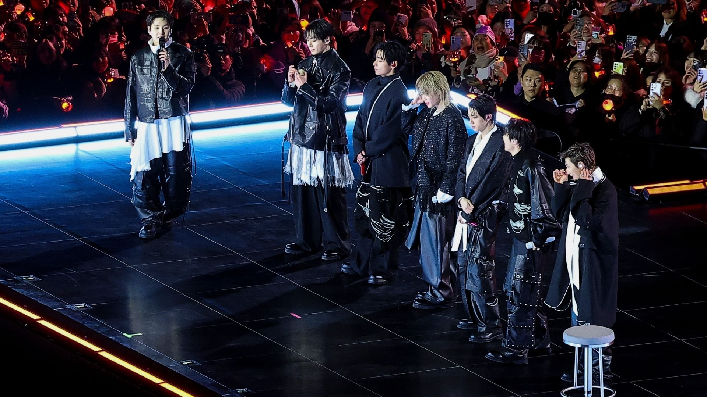
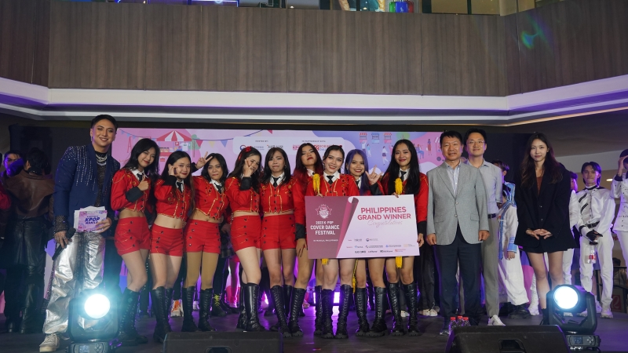

01 What is K-pop?
K-pop is popular music from South Korea.
My Globalization Atlas
06 / 10
Culture does not stay in one place. Follow how it travels, and how it changes along the way.
01 What is K-pop?
K-pop is popular music from South Korea.
02 Where did it start?
K-pop’s early groups emerged in South Korea in the 1990s.

Add your photo here
Search: K-pop group performing on stage South Korea
Save as: kpop-performance.jpg
03 How did it spread?
Digital music and platforms such as YouTube helped K-pop reach audiences worldwide.
04 How did it reach Filipinos?
Korean popular culture became influential in the Philippines through media and entertainment.
Follow K-pop from South Korea to Filipino fans.
Tap any stop to learn more, or press Explore the Connection to watch K-pop travel.
Stage 1 of 5
Add your photo here
05 How did Filipinos adopt it?
Filipino fans joined K-pop communities, attended events, and performed dance covers.
Add your photo here
Search: Filipino K-pop fans fan event Philippines
Save as: filipino-kpop-fans.jpg
06 Does globalization make cultures more similar, more diverse, or both?
Both. Filipinos enjoy Korean pop culture and adapt it through local fan activities and performances.
07 What is the evidence?
In 2023, 13 Filipino dance groups competed in a K-pop cover-dance festival in Manila. One team represented the Philippines in the international final in South Korea.

Add your photo here
Search: Philippines K-pop cover dance competition 2023 Manila
Save as: kpop-dance-competition.jpg